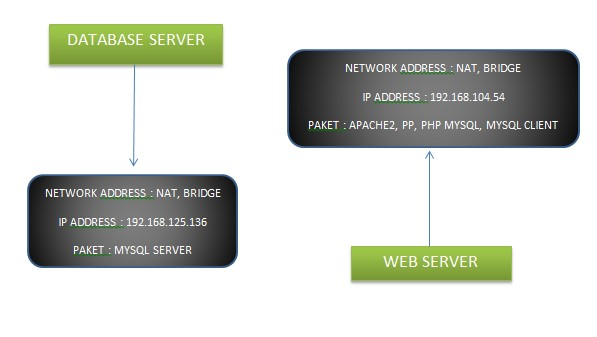
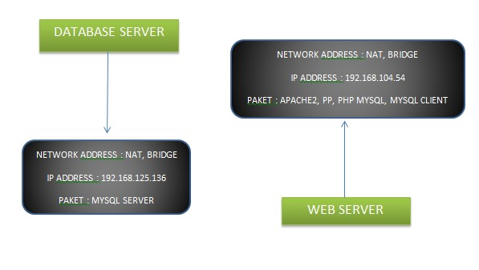
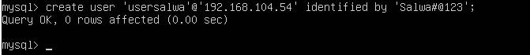
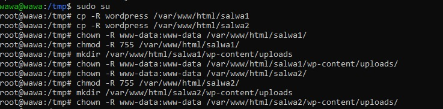

15 september 2022
•Download file database wordpress terlebih dahulu. Lalu extract file ke dalam folder htdocs yang ada di folder xampp sambil mengakifkan xampp (bagian apache dan msql)
 •Lakukan instalasi dengan mengakases wordpress melalui browser. Pada browser, masukkan URL berikut: http://localhost/wordpress-6.0.2
Hasil dari tampilan ini adalah sebagai berikut
•Lakukan instalasi dengan mengakases wordpress melalui browser. Pada browser, masukkan URL berikut: http://localhost/wordpress-6.0.2
Hasil dari tampilan ini adalah sebagai berikut
• Klik continue, Lalu klik tombol lets go dibawah

•Kembali ke tab instalasi wordpress, klik Try Again lalu isikan kembali konfigurasi database seperti tahap sebelumnya, klik Submit.
•Jika konfigurasi tidak ada masalah, langsung saa klik run the installation
•Lengkapi form informasi yang dibutuhkan lalu klik Install Wordpress
•Isikan password dan pastikan kita mengingatnya.
•Untuk melihat dan mengedit web yang telah dibuat, akses menggunakan link berikut: http://localhost/wordpress-6.0.2
•akan muncul seperti gambar dibawah
 TUGAS 2. Membuat website wordpress dengan database terpisah ( 3 website)

TUGAS 2. Membuat website wordpress dengan database terpisah ( 3 website)

• pertama, siapkan database dan web server di Ubuntu.
• Atur network setting menadi bridge dan host only
• Buka database, ketik sudo nano /etc/mysql/mysql.conf.d/mysqld.cnf

Masukkan password untuk user salwa. Ganti bin address menjadi IP Server Database
• Restart mysql dengan perintah sudo systemctl restart mysql
• Membuat user agar Database MySQL dapat diakses melalui WEB Server. Jalankan perintah sudo mysql
• Membuat user dengan menalankan perintah CREATE USER '{username}'@'{ip web server}' IDENTIFIED BY '{password}';
• GRANT ALL PRIVILEGES ON *.* TO '{username}'@'{ip web server}';
• FLUSH PRIVILEGES;

KONFIGURASI WEB SERVER
Jalankan perintah di web server
• lakukan penginstalan mysql-client dengan menjalankan perintah sudo apt install mysql-client
• Login ke mysql DBserver melaluiWebServer dengan perintah mysql –u usersalwa –h (ip) -p
• Jalankan perintah mysql> \s untuk cek informasi database

• perintah php --version untuk mengecek versi dari php
• Membuat file koneksi pada webserver dengan perintah sudo nano/var/www/html/koneksidb.php
INSTALL WORDPRESS DI UBUNTU
• apt update && apt upgrade
• install apache2 menggunakan perintah apt install apache2
• selanjutnya, jalankan perintah systemctl status apache2 untuk memeriksa status apache

• install mysql dan php
apt install mariadb-server mariadb-client
mysql_secure_installation
lalu, jalankan perintah sudo apt install php php-mysql
•masuk ke gnu nano denan perintah sudo nano /var/www/html/path
•create wordpress database. pertama kita masuk ke mysql
dengan perintah mysql –u root –p
lalu menambah database dan user dengan perintah :
•create database wordpress_db;
•create user'wp_user'@'localhost' IDENTIFIED BY 'password';
•grant all on wordpress_db.* TO 'wp_user'@'localhost' IDENTIFIED BY 'password';
•flush previlages; Exit;
INSTALL WORDPRESS
•cd /tmp && wget https://wordpress.org/latest.tar.gz
untuk mengganti directory ke tmp dan mengakses file dari wordpress
•tar -xvf latest.tar.gz
befungsi untuk melakukan ekstract pada folder yang dipilih
•kemudian jalankan perintah seperti gambar dibawah
• step terakhir, buka wordpress menggunakan alamat ip
Lanjut untuk membuat database ke2 dan ke3 Dengan perintah yang sama
Masuk ke mysql , lalu lakukan perintah
create database berfungsi untuk membuat/menambah database baru menambah user barugrant all = untuk memberi hak akses user
flush previlage = membaca ulang perintah yang dibuat
sekarang kita sudah bisa mengakses wordpress dengan satu alamat ip, namun databasenya berbeda
Tugas 3. Jelaskan kegunaan antara union, select, wait dan --Pertama, kita masuk ke mysql dengan perintah sudo mysql –u root –p
Lalu jalankan perintah show databases; untuk melihat database yang ada
Setelah itu, pilih satu database. Dan jalankan perintah use
*Use mysql*
Lalu *show tables;*
select = berfungsi untuk menampilkan, mengambil ataupun memilah informasi dari database atau data dari suatu table serta beberapa table dalam relasi. Dengan menjalankan printah
union = menggabungkan dua table dalam bentuk baris baru ke bawah. Dengan menjalankan peirntah select name from plugin
-> union
-> select component_urn from component;
wait = wait (sleep) befungsi untuk mengatur waktu sampai data keluar
jalankan dengan perintah select *, sleep(7) from component;
-- = berfungsi untuk menambah komentar (diletakkan didepan perintah)
TUGAS 4. AKSES CONTROL LIST PADA MYSQL1. Menggunakan perintah “select”
-membuat user dengan perintah “create user wawa1@localhost identified by ‘pass’; “
-jalankan perintah “grant select on nama_database.nama_tabel to wawa1@localhost;”
-setelah dijalankan, berarti user hanya bisa menggunakan perintah select
-untuk membuktikannya, kita akan coba menggunakan perintah lain. Yaitu drop dan update.
2. Menggunakan perintah alter
-create user wawa2@localhost identified by 'Wawa#257';
- grant alter on pt_wawajaya.user_data to wawa2@localhost;
- show grants for wawa2@localhost;

-kita coba untuk menambah data pada email
-dengan perintah : -alter table user_data add email varchar(30);
3. Menggunakan perintah create
SEKIAN , TERIMAKASIH